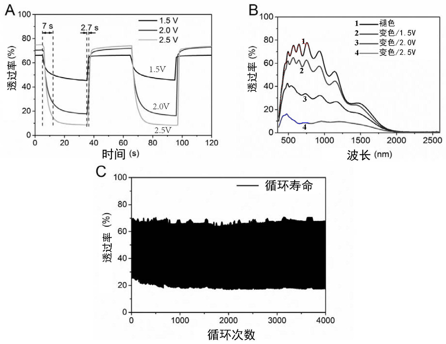
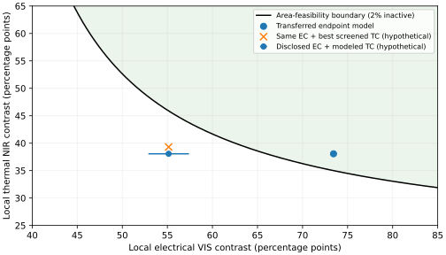

2026-11-06 · 仅题二 · 继独立核对后的新计算
工序可以简化，但实物电控调幅成为当前主要缺口
沿用明示探索口径：VIS380–780nm、NIR780–2500nm，波长等权带平均透过率的绝对差，pp为百分点；不是用户另行确认的相对变化率或光视效能/太阳加权。主幅取另一控制变量两个端点下的较小值；原题没有给串扰通过阈值，本文不称严格解耦。
本轮优先保留9实体、先做完热膜保护的工序对照；8实体版仍附条件。10组具体层序/工序比较及同孔径串叠均已重算。新回收的全固态电控实施例使材料预算更严格：实物图谱可见带均约55.1pp，不能直接代替原73.4pp化学端点预算。当前组合未成为真实易加工达标器件；严格A仍失败、整机B与共同电压仍未闭合。
先把热膜做完，再碰电控工序
小面积目标仍为2×2mm孔径、8µm云母、40µm隔离条，剩余面积EC44%/TC56%。温控区先做VO₂70nm，再一次完成Al₂O₃400nm；之后遮蔽热区，做EC ITO200/LiNiO150/含Li导体200/WO₃480/ITO200/Al₂O₃380nm。与此前相比，LiNiO先沉积以贴近梯度含Li材料的公开层序，热盖层没有20/380nm内部成膜界面，也不把仅20nm屏障留给后续EC工艺。隔离条为裸云母，不再假定有公共终盖层。
该比较仍为9个孔径内实体、8次成膜，最大路径7层，温控路径由4降为3层；不是少一次镀膜。条件VIS/NIR主幅31.67/20.89pp，16个指定相关误差情景最小31.33/20.47pp。真实400nm氧化铝的沉积应力、针孔、后续等离子体和薄云母载持仍待同制程依据，不能据厚度直接判防护通过。离子层复谱仍是Ta₂O₅代理，LiNiO锂梯度未进入光学常数。
更少步骤的8实体版：VO₂后一次整面做400nm Al₂O₃，电控5层做在其上，省去EC终端氧化铝。7次成膜、最大路径仍7层；EC44.5%时条件主幅31.20/20.70pp，16情景最小30.75/20.29pp。代价是EC端没有专门保护层，且η=0.98指定模型共同面积仅44.30–44.65%。不能把上ITO当气密封装；因此它是简化极限对照，暂不取代有终盖层版本。该η不是实测热漂移。
16情景仅膜组±5%、电极/盖层相关±5%、云母n1.55/1.62及厚5/9µm，离子层固定；非全独立公差。改一次400nm盖层后其全部厚度参与相关缩放，未把旧20nm固定误差原封不动借用。所有主幅仍是源化学端点与30/100°C VO₂端点组合。
优先工序对照的交叉响应如下，另一控制变量取最大；采样谱峰不冒称连续谱极值。其余构造的四态、带均/逐谱绝对均和交互项均在JSON，谱峰另列。没有新增串扰验收线，也不以小带均差掩盖局部谱差。
新回收的完整制程实际包含什么
CN112649997A实施例9给出玻璃上ITO200/LiNiO100/LiTaO₃60/WO₃300/ITO300/SiNₓ200nm。底ITO为150°C设定，后续为室温设定；使用镍酸锂和钽酸锂靶。原件还存在“含氧”与“氩气”措辞不一致，未替其补造气体配比。这是公开实物披露，尚非独立复现实验；其单点对比不能充作带平均，也不等同2019论文的另一样品。
Ekström等2023全文确证400°C脉冲溅射M1/白云母的17–180nm样品，主要给结构和电学数据，不能补齐当前光学复谱。Ji等2014全文给出未加热VO₂上反应DC沉积Al氧化物与干热保护实物；基底为1mm玻璃，10–100nm盖层。它支持“氧化物盖层可做”的工艺入口，但不证明当前400nm/薄云母或后续氧等离子体兼容性。也不把源电子束Al₂O₃复谱当成DC膜已知复谱。
把实物图谱代回去，为什么面积调不回来
从原生Figure7B取同一实物披露的褪色曲线和2.5V着色曲线，按380–780nm波长均值重积分：电调约55.14pp，纵向像素加微小端点未知段诊断52.89–57.40pp。原始标定、像素点与覆图保存。图中褪色偏压和端温未标定，因此仍不是同一对电压的两温四态；该区间不含横轴/取线歧义，不是实验置信区间。

只提取图B的380–780nm；红点褪色、蓝点2.5V着色。来源为公开专利原件Figure7，非本项目实测。
对无额外温串的最有利面积预算，局部EC幅a、TC幅b与隔离g必须满足 0.30/a + 0.20/b < 1−g。把该实物EC幅与当前条件模型TC幅38.065pp组合，f必须>55.52%且<46.39%，没有交集；即便取上面的像素诊断最有利值仍没有交集。这是明确的跨样品诊断，未伪装同器件测量，亦不证明其他厚度/电压/架构都不行。
若保留这一EC表现，TC局部NIR温幅需要>45.88pp。若保留当前TC，EC局部可见幅需约>65.99pp。低串扰或几何16/16本身不能填上这一振幅缺口。

绿侧为理想无附加温串时的面积可行侧；两种实物/模型组合明确标为假设预算。越过曲线仍不代表材料、共同电压或制造已闭合。
少加一层匹配膜能不能补足温调
对Wan三组连续溅射样品分别保留身份，在各自报告厚度区间内只改变VO₂厚度与10–1000nm前盖层；另作10–300nm背面氧化铝AR对照。345点筛选后1721点重新积分，候选中最大局部NIR约39.31pp，距45.88pp仍明显不足。第三组背面AR搜索到迭代上限，停止标记保留；不把一次搜索当成全局最优或不可行定理。源厚度区间也不证明n/k在该区间恒定；尚未对这些筛选点认证材料/误差。
同孔径全串叠也已用完整9层TMM重算，未把两个自由空间透射率直接相乘：主幅仅18.48/0.24pp，电控着色吸收会遮掉温控响应。这否定当前材料/厚度直接串起来的补救，非所有串叠结构无解。
当前取舍与后续判别
暂以“先完整保护热膜、EC保留终盖层”的9实体版作为工序对照；8实体版需先解决EC端保护，增加复杂封装就失去删膜优势。实物EC幅与TC预算不匹配后，应优先寻找具有足够带平均幅度的完整电控器件或更强的真实温控薄膜数据；继续细调当前匹配层不能冒称已经解决。已有单点大调制、单材料成膜与不同温度分别取最佳偏压均不足以闭合原题。
严格A仍由ITO/热VO₂越界失败；550nm标称B仍缺同制程完整输入。载架、接点、边封如保留需加入最终账本，不能用孔径内实体数豁免。原题验证仍为仿真，不新增必须先制样或寿命验收；需要的是可信同制程数据支撑同器件四态。未推进题一。
全部新结果与限制公开器件可见取谱原始输入与便携复算包
包内verify.py重积分，recompute_process.py重算10组层序与串叠，recompute_trace.py从公开原件重新取谱，recompute_target.py重跑有界筛选。Python3、NumPy2、SciPy、tmm、Pillow、PyMuPDF。所有重算写入新目录；源码精确快照保留。